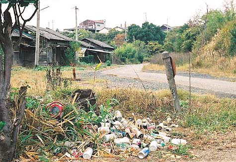
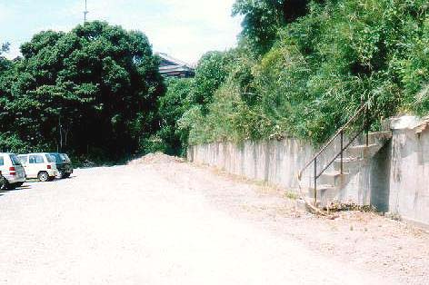
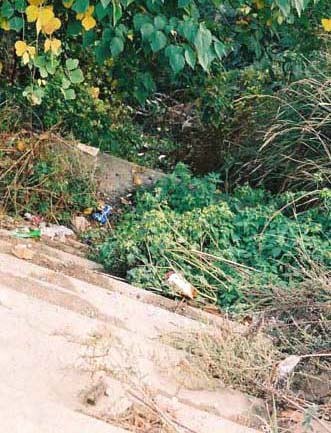
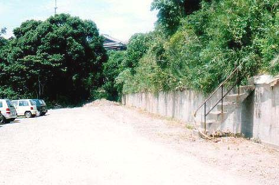
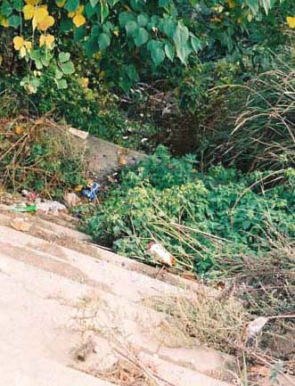
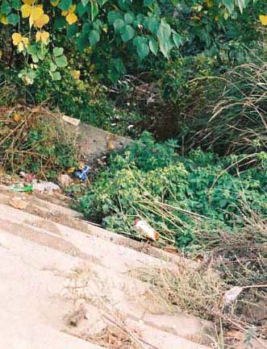

（昭和58年撮影）  （1994年11月撮影）  桧社宅跡。現荒尾シティモール従業員用駐車場（1997年8月29日撮影)  緑ヶ丘小学校通学路跡（1997年8月29日撮影) 写真では何が何だか判らないかも知れないが、前葉写真の奥から緑ケ丘小学校へ上がる通学路 の階段だった所。しかし現在生い茂った草木で通行不可となっている。それはあたかも「もうお前が帰る所などない」と故郷 が私を拒んでいるようにも思えて悲しかった。
（1994年11月撮影）  桧社宅跡。現荒尾シティモール従業員用駐車場（1997年8月29日撮影)  緑ヶ丘小学校通学路跡（1997年8月29日撮影) 写真では何が何だか判らないかも知れないが、前葉写真の奥から緑ケ丘小学校へ上がる通学路 の階段だった所。しかし現在生い茂った草木で通行不可となっている。それはあたかも「もうお前が帰る所などない」と故郷 が私を拒んでいるようにも思えて悲しかった。
桧社宅跡。現荒尾シティモール従業員用駐車場（1997年8月29日撮影)  緑ヶ丘小学校通学路跡（1997年8月29日撮影) 写真では何が何だか判らないかも知れないが、前葉写真の奥から緑ケ丘小学校へ上がる通学路 の階段だった所。しかし現在生い茂った草木で通行不可となっている。それはあたかも「もうお前が帰る所などない」と故郷 が私を拒んでいるようにも思えて悲しかった。
緑ヶ丘小学校通学路跡（1997年8月29日撮影) 写真では何が何だか判らないかも知れないが、前葉写真の奥から緑ケ丘小学校へ上がる通学路 の階段だった所。しかし現在生い茂った草木で通行不可となっている。それはあたかも「もうお前が帰る所などない」と故郷 が私を拒んでいるようにも思えて悲しかった。
写真では何が何だか判らないかも知れないが、前葉写真の奥から緑ケ丘小学校へ上がる通学路 の階段だった所。しかし現在生い茂った草木で通行不可となっている。それはあたかも「もうお前が帰る所などない」と故郷 が私を拒んでいるようにも思えて悲しかった。